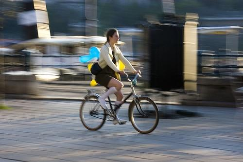

0.705968

0.707571

0.765194

0.784121

0.794460

0.795848

0.878995
0.907113

0.908645

0.916612
| Target image | 0.705968 | 0.707571 | 0.765194 | 0.784121 | 0.794460 | 0.795848 | 0.878995 |  0.907113 | 0.908645 | 0.916612 |
Target image |  13866.647461 |  13260.229492 |  12258.649414 |  12192.134766 |  12016.891602 |  11174.712891 |  10373.813477 |  10180.560547 |  9771.928711 |  9640.035156 |
Target image |  13826.007812 |  11435.676758 |  11236.563477 |  11116.396484 |  10538.011719 |  9424.400391 |  9252.950195 |  8739.703125 |  8103.260254 |  7476.204102 |
Target image |  12227.377930 |  11082.299805 |  10438.909180 |  9824.416992 |  9794.740234 |  9642.913086 |  9404.071289 |  9127.527344 |  8445.111328 |  8232.946289 |
Target image |  14447.373047 |  13621.808594 |  13303.574219 |  10938.392578 |  10230.437500 |  9814.893555 |  9655.375000 |  9527.630859 |  8704.819336 |  8633.127930 |